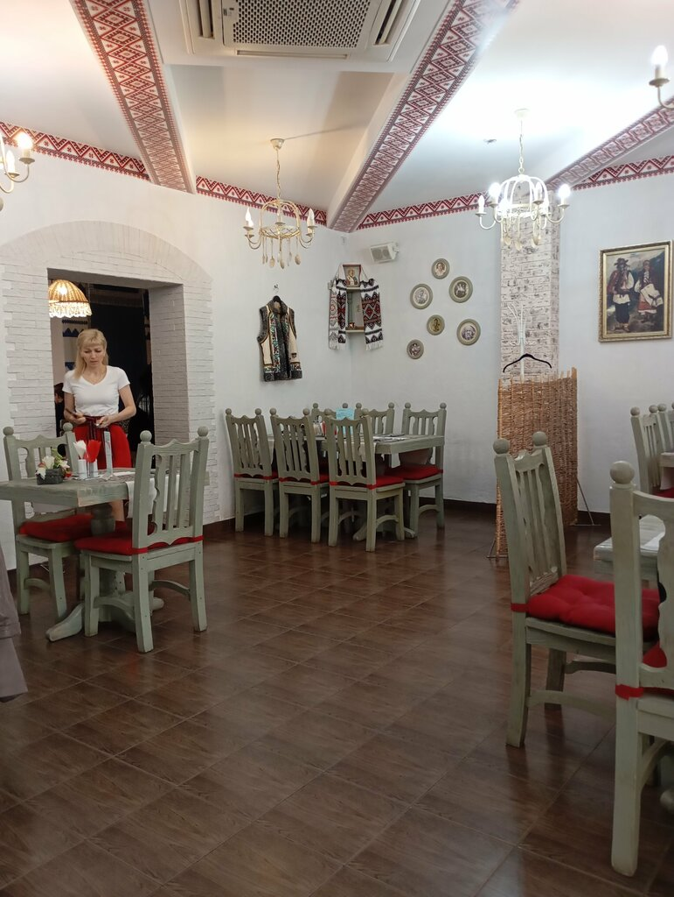

Кафе-ресторан · БерезникиЧервона
Червона
рута
Кафе-ресторан «Червона рута» в Березниках. Здесь собраны адрес, телефон и ссылка на справочную карточку.
Березники · Карла МарксаРчервона рута
Червона рута ✿ Березники ✿ Адрес и телефон
ЗнакомствоКафе-ресторан
Кафе-ресторан
в Березниках
На этой странице — контактная информация для филиала на улице Карла Маркса, 60. Можно позвонить или открыть справочную карточку, чтобы уточнить детали.
Ждём вас в кафе на улице Карла Маркса, 60.
Сверьте адрес и связь перед визитом.
Карла Маркса · Березники
Контакты и маршрутНайдите
Найдите
«Червону руту»
Откройте карточку справочника или постройте маршрут до указанного адреса.
АдресБерезники, улица Карла Маркса, 60
Телефон+7 (3424) 23-63-86
На Карла Маркса,
60
Для уточнения сведений воспользуйтесь телефоном или справочной карточкой.
Открыть карточку ↗В нашем кафе
